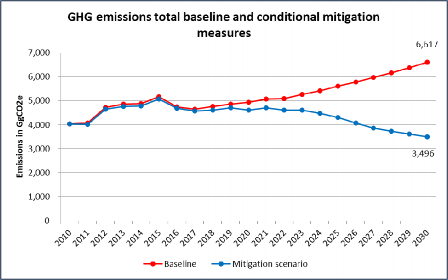

The Republic of The Gambia is pleased to communicate its second Nationally Determined Contribution (NDC2) in accordance with Decision 1/CP.21 of the Conference of the Parties to the Paris Agreement.
The NDC2 builds on the first NDC of The Gambia (NDC1). The NDC1 had originally been submitted as the Intended Nationally Determined Contribution (INDC) prior to COP21 in Paris and resubmitted as the first NDC as part of The Gambia’s ratification of the Paris Agreement on 11th July, 2016.
The Gambia’s NDC1 has received the positive distinction of being considered ‘1.5°C Paris Agreement- compatible’ by the Climate Action Tracker (CAT). The nation is one of the few developing countries with a conditional target that sets emissions on a downward trajectory. In developing the NDC2, the Government of The Gambia (GoTG) is committed to retaining and, where possible, enhancing its strong ambition, while strengthening the integration of the identified mitigation measures into national planning processes. The recently validated 2050 Climate Vision of The Gambia underscores the high level of commitment to decarbonization: it establishes the political aspiration for The Gambia to achieve net zero emissions by 2050, guiding the NDC2. This aspiration serves as a guiding rod for the NDC2. Belonging to the group of least developed countries, the Gambia could have communicated strategies, actions and plans as its NDC (as per Article 4.6 of the Paris Agreement), but has chosen to submit quantified targets instead.
The NDC2 represents an advance relative to the NDC1 in the following respects.
First, sectoral coverage has been extended to include all greenhouse (GHG) emissions in The Gambia. The NDC2 covers the entire Agriculture, Forestry and Other Land Use (AFOLU) sector, in line with the 2006 Intergovernmental Panel on Climate Change (IPPC) guidelines, while the NDC1 addressed only agricultural emissions. The waste sector now includes emissions for both solid waste and wastewater, while the NDC1 did not include wastewater emissions.
Second, an additional 13 mitigation measures have been included. The NDC1 identified 10 mitigation options. The NDC2 revises and strengthens those mitigation measures and includes additional ones identified through the metabolic analysis and IRENA’s work on the power sector. An additional eight mitigation measures were identified through the metabolic analysis, while IRENA defined eight for the power sector through the cost-effectiveness analysis of renewable energy mitigation options (five of which from the NDC1 were strengthened) and ICLEI added another two new options. All of these are included in the NDC2.
Third, the NDC2 relies on an enhanced and more robust database to estimate baseline emissions. The NDC1 relied on two scenarios: a low baseline scenario and a high baseline scenario, resulting in a significant difference (87percent) in estimated 2030 emissions. The NDC2 updates the sectoral data and assumptions were refined to derive a single, ‘best guess’ scenario. In addition, the 2010 emission level serving as the starting point for the projections had not been fully determined when the NDC1 was being drafted because The Gambia’s National GHG Inventory Report had not yet been completed. The NDC2 places the baseline projections on a more solid footing by using the emissions in the official inventory report, as published in The Gambia’s Third National Communication (TNC) (2020). This generated the following change: while the NDC1 projected a 2030 business-as-usual (BAU) scenario level of 3,858 GgCO2e, the NDC2 revises that projection to 6,617 GgCO2e. The NDC1 mitigation scenario projects a reduction of around 1,800 GgCO2e. The mitigation measures proposed in the NDC2 project GHG emissions of 3,327 GgCO2e in 2030, a reduction of 49.7 percent (3,290 GgCO2e in absolute figures) against BAU.
Fourth, the adaptation section was strengthened, providing more details on The Gambia’s climate vulnerability, envisaged adaptation action and finance needs.
Nevertheless, developing the NDC2 was also a challenging undertaking. The most recent available inventory data dates back to 2010, which complicates the projections of baseline emissions. With the 2010 starting point emissions corrected, The Gambia’s overall emissions increased substantially, from 1,758 GgCO2e and 3,711 GgCO2e in 2010 (NDC 1 low and high scenarios) to 4,033 GgCO2e (NDC2). This has repercussions for the subsequent projections, generating higher baseline emissions in 2030. Another challenge involved the limited integration of the mitigation measures identified in the NDC1 into the country’s actual development plans. The COVID-19 pandemic also posed a significant challenge as it hindered data collection and reduced the number and quality of consultations with stakeholders. On the positive side, however, considerable progress was made in the electricity sector, with new investments in renewable energy in preparation (primarily in solar PV and hydropower).
An essential document for understanding the considerations that have let to underlying decisions for the NDC2 is the corresponding NDC Update Report. The Report allows for the disclosure of assumptions, data and processes of the NDC2 with a view to facilitating international stock take and transparency of information. The different sections of the NDC2 build on the information made available in the Report. More granular details and references can be found there.
Honourable Lamin B. Dibba, Minister
Ministry of Environment, Climate Change & Natural Resources
|
1. |
Quantifiable information on the reference point (including, as appropriate, a base year) |
|
|
(a) |
Reference year(s), base year(s), reference period(s) or other starting point(s) |
Base year for emission projections: 2010 Reference year for BAU emission target: 2030 |
|
(b) |
Quantifiable information on the reference indicators, their values in the reference year(s), base year(s), reference period(s) or other starting point(s), and, as applicable, in the target year |
The 2030 projected emission level is 6,617 GgCO2e. |
|
(c) |
For strategies, plans and actions referred to in Article 4, paragraph 6, of the Paris Agreement, or polices and measures as components of nationally determined contributions where paragraph 1(b) above is not applicable, Parties to provide other relevant information |
Not applicable |
|
(d) |
Target relative to the reference indicator, expressed numerically, for example in percentage or amount of reduction |
The GHG emissions reduction from baseline level (BAU) in 2030 is 49.7percent. |
|
(e) |
Information on sources of data used in quantifying the reference point(s) |
The Gambia’s TNC, which is based on the country’s 2010 National GHG Inventory Report, was used to quantify the baseline level. |
|
(f) |
Information on the circumstances under which the Party may update the values of the reference indicators |
The BAU scenario was updated based on final National GHG Inventory data available for 2010 and other data sets, helping to improve understanding of the most likely development under the BAU scenario. The Gambia plans to update the country’s GHG inventory. The Ministry of Environment, Climate Change and Natural Resources (MECCNAR) has signed Memoranda of Understanding with sectoral ministries to coordinate information gathering for the inventory. A measurement, reporting and verification (MRV) tool for emissions from the forestry, energy and agriculture sectors is under development and will serve to update the inventory. The reference indicators may change as a result of the update. |
|
2. |
Time frames and/or periods for implementation |
|
|
(a) |
Time frame and/or period for implementation, including start and end date, consistent with any further relevant decision adopted by the Conference of the Parties serving as the meeting of the Parties to the Paris Agreement (CMA) |
1 January 2021 - 31 December 2030. |
|
(b) |
Whether it is a single-year or multi-year target, as applicable |
Single-year target. |
|
3. |
Scope and coverage |
|
|
(a) |
General description of the target |
The mitigation measures described in the NDC2 will allow the country to reduce its GHG emissions by 49.7 percent compared to the expected 2030 baseline. In absolute figures, the mitigation measures will reduce The Gambia’s GHG emissions by 3,290 GgCO2e. |
|
(b) |
Sectors, gases, categories and pools covered by the nationally determined contribution, including, as applicable, consistent with Intergovernmental Panel on Climate Change (IPCC) guidelines |
Sectors/categories:
Gases: Carbon dioxide (CO2), methane (CH4), nitrous oxide (N2O), hydrofluorocarbons (HFCs). |
|
(c) |
How the Party has taken into consideration paragraph 31(c) and (d) of decision 1/CP.21 |
Compared to the NDC1, coverage of the NDC2 has been extended. While the NDC1 did not cover all AFOLU emissions, the NDC2 covers the entire sector. The waste sector now includes emissions for both solid waste and wastewater, while wastewater emissions were not included in the NDC1. |
|
(d) |
Mitigation co-benefits resulting from Parties’ adaptation actions and/or economic diversification plans, including description of specific projects, measures and initiatives of Parties’ adaptation actions and/or economic diversification plans |
The Strategic Programme for Climate Resilience (SPCR) outlines several activities aimed at enhancing climate change resilience in The Gambia. These include:
Mitigation co-benefits can be expected from the implementation of these measures. |
|
4. |
Planning process |
|
|
(a) |
Information on the planning processes that the Party undertook to prepare its nationally determined contribution and, if available, on the Party’s implementation plans, including, as appropriate: |
|
|
(i) |
Domestic institutional arrangements, public participation and engagement with local communities and indigenous peoples, in a gender-responsive manner |
The GoTG’s climate change portfolio and policy issues are entrusted to MECCNAR, the institution responsible for coordinating NDC implementation in the country. MECCNAR was in charge of the NDC revision process in The Gambia. International partners, including the UNDP Climate Promise, IRENA, ICLEI and the NDC Partnership, supported the process. The process produced two outputs: The Gambia’s Second NDC (NDC2) and an NDC Update Report. The report elaborates on and combines the groundwork carried out for the NDC revision process, including a metabolic analysis and cost-effectiveness analysis of renewable energy technology options. It provides for the disclosure of underlying considerations, data and processes of the NDC2 in the interest of international stocktake and information transparency. The mitigation measures included in the NDC2 were validated through consultation with stakeholder representatives from sectors relevant to NDC implementation, including from the public and private sectors, NGOs (such as Action Aid International The Gambia), academia, and stakeholder organisations (such as the National Women Farmers Association and the TRY Oyster Women’s Association). The selection of stakeholder groups sought to ensure that consultations were gender responsive. In conjunction with the NDC revision process, The Gambia began to develop a costed NDC implementation plan, with support from ICLEI. At the time of NDC2 publication, the plan was being finalized. |
|
(ii) |
Contextual matters, including, inter alia, as appropriate: a. National circumstances, such as geography, climate, economy, sustainable development and poverty eradication; b. Best practices and experience related to the preparation of the nationally determined contribution; c. Other contextual aspirations and priorities acknowledged when joining the Paris Agreement |
The Gambia is a least developed country (LDC) that, due to its geographic location and status of economic development, is highly vulnerable to the impacts of climate change. In particular, coastal erosion and saltwater intrusion due to rising sea levels, as well as reduced rainfalls and variations in rainy season patterns, threaten livelihoods. The country depends largely on rainfed smallholder agriculture for food security - the main pillar of the economy - which leaves The Gambia highly vulnerable to drought and changes in annual rainfall patterns. Temperature change and saltwater intrusion also threaten the country’s mangroves, making the country susceptible to flooding. Extensive information on The Gambia’s national circumstances is available in the country’s TNC under the UNFCCC (Chapter 2). |
|
(b) |
Specific information applicable to Parties, including regional economic integration organizations and their member States, that have reached an agreement to act jointly under Article 4, paragraph 2, of the Paris Agreement, including the Parties that agreed to act jointly and the terms of the agreement, in accordance with Article 4, paragraphs 16–18, of the Paris Agreement |
Not applicable |
|
(c) |
How the Party’s preparation of its nationally determined contribution has been informed by the outcomes of the global stocktake, in accordance with Article 4, paragraph 9, of the Paris Agreement |
Although the first global stocktake has not yet been conducted, the NDC Synthesis Report published by the UNFCCC Secretariat in February 2021 provides a preliminary indication as to whether updated NDC targets are in line with the Paris Agreement’s objectives. The report states that aggregated estimated emission reductions “fall far short of what is required” to keep global warming to 1.5°C or below 2°C. Although The Gambia’s contribution to climate change has always been marginal (less than 0.01 percent of global GHG emissions in 2010, according to the Climate Analysis Indicators Tools (CAIT) database), the country adopted an ambitious NDC1. The CAT found it to be compatible with the 1.5°C target. The NDC2 further enhances the NDC1 targets by increasing sectoral coverage and including additional mitigation measures. As such, The Gambia sets an example by increasing the ambition of an NDC that was already consistent with the most ambitious goals of the Paris Agreement. |
|
(d) |
Each Party with a nationally determined contribution under Article 4 of the Paris Agreement that consists of adaptation action and/or economic diversification plans resulting in mitigation co-benefits consistent with Article 4, paragraph 7, of the Paris Agreement to submit information on: |
|
|
(i) |
How the economic and social consequences of response measures have been considered in developing the nationally determined contribution |
The National Adaptation Plan (NAP) process will allow the socioeconomic consequences of the adaptation measures identified to be assessed. |
|
(ii) |
Specific projects, measures and activities to be implemented to contribute to mitigation co- benefits, including information on adaptation plans that also yield mitigation co-benefits, which may cover, but are not limited to, key sectors, such as energy, resources, water resources, coastal resources, human settlements and urban planning, agriculture and forestry; and economic diversification actions, which may cover, but are not limited to, sectors such as manufacturing and industry, energy and mining, transport and communication, construction, tourism, real estate, agriculture and fisheries |
See 3(b) above. |
|
5. |
Assumptions and methodological approaches, including those for estimating and accounting for anthropogenic greenhouse gas emissions and, as appropriate, removals |
|
|
(a) |
Assumptions and methodological approaches used for accounting for anthropogenic greenhouse gas emissions and removals corresponding to the Party’s nationally determined contribution, consistent with decision 1/CP.21, paragraph 31, and accounting guidance adopted by the CMA |
The Gambia intends to report a GHG inventory in accordance with Decision 18/CMA.1 and report on progress towards its NDC by 31 December 2021. The Gambia will use the accounting guidance in Decision 4/CMA.1 for relevant accounting information. For IPCC methodologies and metrics, see 5 (d). Final accounting towards the target will depend on The Gambia’s participation in voluntary cooperation under Article 6 of the Paris Agreement. Any transfers or uses of internationally transferred mitigation outcomes (ITMOs) will be accounted for and corresponding adjustments will be made consistent with the Article 6 and Article 13 guidance. |
|
(b) |
Assumptions and methodological approaches used for accounting for the implementation of policies and measures or strategies in the nationally determined contribution |
Not applicable |
|
(c) |
If applicable, information on how the Party will take into account existing methods and guidance under the Convention to account for anthropogenic emissions and removals, in accordance with Article 4, paragraph 14, of the Paris Agreement, as appropriate |
Please refer to 5(a) above. The IPCC 2006 Guidelines were used to calculate emissions in the GHG Inventory of The Gambia’s TNC. |
|
(d) |
IPCC methodologies and metrics used for estimating anthropogenic greenhouse gas emissions and removals |
See 5(c) above. |
|
(e) |
Sector-, category- or activity-specific assumptions, methodologies and approaches consistent with IPCC guidance, as appropriate, including, as applicable: |
|
|
(i) |
Approach to addressing emissions and subsequent removals from natural disturbances on managed lands |
Not applicable |
|
(ii) |
Approach used to account for emissions and removals from harvested wood products |
Not applicable |
|
(iii) |
Approach used to address the effects of age- class structure in forests |
Not applicable |
|
(f) |
Other assumptions and methodological approaches used for understanding the nationally determined contribution and, if applicable, estimating corresponding emissions and removals, including: |
|
|
(i) |
How the reference indicators, baseline(s) and/or reference level(s), including, where applicable, sector-, category- or activity-specific reference levels, are constructed, including, for example, key parameters, assumptions, definitions, methodologies, data sources and models used |
The 2010 National GHG Inventory Report was used as the basis for baseline development and to determine emission levels in the base year. Sectoral baselines were derived using top-down methods, based on historic data, intensities and expected growth rates. Expected future developments of individual parameters are derived using statistical methods (e.g., linear extrapolation of past trends), data from external sources (e.g., Food and Agriculture Organization of the United Nations (FAO)) or are based on targets stated in various strategies and plans (e.g., Second Generation National Agricultural Investment Plan – Food and Nutrition Security (GNAIP II) or The Gambia’s National Transport Policy). The NDC Update Report presents the assumptions made for the development of each sectoral baseline, as well as data sources used to calculate GDP and population growth scenarios. |
|
(ii) |
For Parties with nationally determined contributions that contain non-greenhouse-gas components, information on assumptions and methodological approaches used in relation to those components, as applicable |
Not applicable |
|
(iii) |
For climate forcers included in nationally determined contributions not covered by IPCC guidelines, information on how the climate forcers are estimated |
Not applicable |
|
(iv) |
Further technical information, as necessary |
Not applicable |
|
(g) |
The intention to use voluntary cooperation under Article 6 of the Paris Agreement, if applicable |
The Gambia intends to use voluntary cooperation under the framework provided by Article 6 of the Paris Agreement. The country does not plan to achieve any of its commitments by acquiring ITMOs. Instead, it would be a host country for mitigation activities aiming to protect the planet by meeting standards that deliver real, permanent, additional and verified mitigation outcomes that contribute to sustainable development, while avoiding the double counting of emission reductions. |
|
6. |
How the Party considers that its nationally determined contribution is fair and ambitious in the light of its national circumstances |
|
|
(a) |
How the Party considers that its nationally determined contribution is fair and ambitious in the light of its national circumstances |
The Gambia’s contribution to global climate change has always been marginal. According to the CAIT database, its GHG emissions in 2010 represented less than 0.01 percent of global emissions. At first sight, it would seem unfair to ask a country like The Gambia to contribute to global emission reduction efforts. This would suggest that resources to be allocated to poverty reduction and development priorities would be shifted to climate action, in keeping with the Paris Agreement’s implementation requirements. The Gambia has always taken a progressive position and shown commendable leadership in the climate change negotiations, as the current level of global mitigation ambition is quite low and likely to pose tremendous challenges for countries like The Gambia. Agriculture, energy and water resources - sectors vital to The Gambia’s economy - will suffer greatly if global and deep cuts do not occur in the near future. For this reason, The Gambia exercised leadership by joining the 2011 call for a universal mobilization of efforts to tackle climate change so that global actions can protect the future of the most vulnerable countries. With its NDC1, The Gambia wanted to take a moral position and call on all responsible and capable countries to take actions proportional to their responsibilities and capabilities, both for themselves and for the entire global community. The NDC2 reaffirms and, even, strengthens this commitment. The Gambia is an LDC. Under the Lima Call for Action, LDCs are not required to set quantified or quantifiable targets. However, The Gambia’s NDC2 includes quantified and quantifiable commitments that exceed The Gambia’s fair share. |
|
(b) |
Fairness considerations, including reflecting on equity |
Fairness considerations were addressed in 4(c) and 6(a). |
|
(c) |
How the Party has addressed Article 4, paragraph 3, of the Paris Agreement |
The Gambia’s NDC2 represents an advance relative to the NDC1 in the following respects:
The Gambia’s NDC reflects the country’s highest possible ambition, taking into account “common but differentiated responsibilities and respective capabilities, in the light of different national circumstances”. Considerations to support this statement are provided in 4(c) and 6(a). |
|
(d) |
How the Party has addressed Article 4, paragraph 4, of the Paris Agreement |
The Gambia is a developing country. As explained in 6(c), the NDC2 enhances its mitigation efforts compared to the NDC1. Moreover, the NDC1 included an economy-wide reduction target, which the NDC2 retains. As such, The Gambia’s NDC stands out as very ambitious. |
|
(e) |
How the Party has addressed Article 4, paragraph 6, of the Paris Agreement |
Not applicable (The Gambia chose to submit a quantifiable target as its NDC instead of communicating strategies, actions and plans) |
|
7. |
How the nationally determined contribution contributes towards achieving the objective of the Convention as set out in its Article 2 |
|
|
(a) |
How the nationally determined contribution contributes towards achieving the objective of the Convention as set out in its Article 2 |
As noted in 4(c), The Gambia’s NDC1, whose mitigation ambition has been further enhanced in the NDC2, was deemed to be compatible with the 1.5°C goal of the Paris Agreement by the CAT. As such, this NDC will contribute substantially to achieving the ultimate objective of stabilizing GHG concentrations in the atmosphere at a level that would prevent dangerous anthropogenic interference with the climate system and within a time frame sufficient to allow ecosystems to adapt naturally to climate change. This will ensure that food production is not threatened and will enable economic development to proceed in a sustainable manner. |
|
(b) |
How the nationally determined contribution contributes towards Article 2, paragraph 1(a), and Article 4, paragraph 1, of the Paris Agreement |
As noted in 4(c), this NDC is consistent with the goal of limiting the temperature increase to 1.5 °C above the pre- industrial level. The Gambia’s GHG emissions peaked in 2015 (excluding IPPU) and trend downward in the mitigation scenario. The Gambia is developing a 2050 Climate Vision that will establish the country’s goal to reach net-zero carbon emissions by 2050, thus contributing to the goal of achieving a balance between anthropogenic emissions by source and removals by sinks in the second half of this century. |
GHG emissions in The Gambia are expected to increase from 4,935 GgCO2e in 2020 to 6,617 GgCO2e in 2030 (34.1 percent). Based on the mitigation measures outlined in this NDC, GHG emissions in 2030 will be 3,327 GgCO2e. This is a 49.7 percent reduction compared to the expected baseline level in 2030. In absolute figures, the mitigation measures will reduce the Gambia’s GHG emissions by 3,290 GgCO2e.
Figure 1: GHG emissions: Total baseline and mitigation scenario 2010-2030
Figure 2: GHG emissions mitigation scenario by sector 2010-2030
|
ID |
Mitigation measure |
Unconditional |
Conditional upon* |
Mitigation potential |
|
|
FS |
TT |
Gg Co2e in 2030 |
|||
|
1 |
GHG reduction from different rice ecologies in the Gambia |
✓ |
✓ |
449 |
|
|
MA1 |
Improving agricultural resilience by implementing climate-smart agriculture |
✓ |
✓ |
205 |
|
|
MA2 |
Improving livestock productivity |
✓ |
✓ |
408 |
|
|
MA8 |
Reducing food losses |
✓ |
✓ |
131 |
|
|
2 |
Re-greening degraded landscapes (including protected forests) |
✓ |
✓ |
373 |
|
|
3 |
Upscaling deployment of fuel-efficient biomass combustion stoves |
✓ |
✓ |
218 |
|
|
MA3 |
Multistrata agroforestry |
✓ |
169 |
||
|
MA4 |
Firewood from agroforestry |
✓ |
✓ |
169 |
|
|
E1 |
89 MW of utility-scale solar PV capacity |
✓ |
✓ |
97 |
|
|
E2 |
3.6 MW of utility-scale wind capacity |
✓ |
✓ |
4.2 |
|
|
E3 |
Reduction of transmission and distribution losses to 17% |
✓ |
✓ |
35 |
|
|
E4 |
Full replacement of diesel mini-grids with solar PV and battery storage systems |
✓ |
✓ |
01 |
|
|
E5 |
Solar home systems to supply off-grid consumption |
✓ |
0.08 |
||
|
E6 |
Substitution of incandescent light bulbs |
✓ |
✓ |
0.18 |
|
|
E7 |
Solar water heating facilities to supply 10% of demand by 2030 |
✓ |
✓ |
43.3 |
|
|
E8 |
6 MW of solar PV rooftop systems by 2024 |
✓ |
✓ |
6.54 |
|
|
4 |
Downsizing the Gambia’s transport sector carbon footprint |
✓ |
✓ |
129 |
|
|
5 |
Integrated waste management |
✓ |
✓ |
497 |
|
|
MA7 |
Organic waste recovery |
✓ |
✓ |
02 |
|
|
MA6 |
Biogas from waste management and landfills |
✓ |
✓ |
03 |
|
|
6 |
Substituting HFCs in production and manufacturing processes |
✓ |
✓ |
04 |
|
|
MA10 |
Substituting HFC |
✓ |
✓ |
804 |
|
|
*FS= financial support, TT= technology transfer |
|||||
Four mitigation measures have been identified in the agriculture sector:
1 – GHG reduction from different rice ecologies in the Gambia
MA1 – Improving agricultural resilience by implementing climate-smart agriculture
MA2 – Improving livestock productivity
MA8 – Reducing food losses
|
Measure |
Conditionality |
Mitigation potential (in GgCO2e) and timeline |
|
1 – GHG reduction from different rice ecologies in the Gambia Component 1: Upland system Nerica upland rice Component 2: Lowland system - System of rice intensification (SRI) Component 3: Lowland system - Tidal irrigation |
Conditional |
449 GgCO2e in 2030 |
|
MA1 – Improving agricultural resilience by implementing climate-smart agriculture CSA proposes a combination of measures that reduce GHG emissions, while also improving the resilience of agricultural production to climate change impact. It does so typically through a combination of measures involving soil and nutrient management, water harvest and use, biodiversity management, pest and disease control, and the use of quality seeds and planting materials of well-adapted crops and varieties. |
Conditional |
205 GgCO2e in 2030 |
|
MA2 – Improving livestock productivity Some of the mitigation options are already practiced in The Gambia, including free roam grazing and combined forestry with cattle grazing. Still, livestock make up 11% of national GHG emissions. Additional productivity improvements offer mitigation potential. The World Bank and FAO have identified measures that may still be relevant to the Gambian context, ranging from improved forage quality to grazing management and improved animal health. |
Conditional |
408 GgCO2e in 2030 |
|
MA8 – Reducing food losses Reduction of food losses involves activities including:
|
Conditional |
131 GgCO2e in 2030 |
GHG emissions in the agriculture sector are expected to rise from 1,124 GgCO2e in 2020 to 1,466 GgCO2e in 2030 (a 30.4 percent increase). Based on the mitigation measures listed above, GHG emissions in 2030 will be 273 GgCO2e. This is a 75.7percent decrease compared to the 2020 level and 81.3 percent compared to the expected baseline level in 2030.
Figure 3: GHG emissions: Agriculture baseline and mitigation scenario
1.3.2 Land use, land-use change, and forestry (LULUCF)
Four mitigation measures have been identified in the LULUCF sector:
2 – Re-greening degraded landscapes (including protected forests)
3 – Upscaling deployment of fuel-efficient biomass combustion stoves
MA3 – Multistrata agroforestry
MA4 – Firewood from agroforestry
|
Measure |
Conditionality |
Mitigation potential (in GgCO2e) and timeline |
|
2 – Re-greening degraded landscapes (including protected forests) Component 1: Planting and management (afforestation) Component 2: Fire prevention and control |
Conditional |
373 GgCO2e in 2030 |
|
3 – Upscaling deployment of fuel-efficient biomass combustion stoves Component 1: Residential applications Component 2: Commercial and industrial applications |
Conditional |
218 GgCO2e in 2030 |
|
MA3 – Multistrata agroforestry Several initiatives are aimed at combining agricultural and forestry activities to improve food security. This circular mitigation strategy aims to strengthen these initiatives to increase tree cover in The Gambia, both in urban and rural areas. Trees help retain water and improve drought resilience, provide food to the rural population in case of shortages, and provide shade in cities. |
Unconditional |
169 GgCO2e in 2030 |
|
MA4 – Firewood from agroforestry The 95,000 ha under community-based multistrata agroforestry in MA3 can produce around 262,000 tons of wood/year, assuming an agroforestry yield of 2.8 ton/ha/year. In the short run, it can be used to replace firewood from non-renewable sources. In the long run, when biogas and improved cookstoves further reduce firewood demand, the wood from agroforestry operations can be used for timber and as a substitute for carbon-intensive construction materials. |
Conditional |
169 GgCO2e in 2030 |
GHG emissions in the LULUCF sector are expected to decrease from 1,415 GgCO2e in 2020 to 1,082 GgCO2e in 2030 (a decrease of 23.5 percent). Based on the mitigation measures listed above, GHG emissions in 2030 will be 589 GgCO2e. This is a 58.4 percent decrease compared to the 2020 level and a 45.6 percent compared to the expected baseline level in 2030.
Figure 4: GHG emissions: LULUCF baseline and mitigation scenario
Eight mitigation measures have been identified in the energy sector:
E1 – 89 MW of utility-scale solar PV capacity
E2 – 3.6 MW of utility-scale wind capacity
E3 – Reduction of transmission and distribution losses to 17%
E4 – Full replacement of diesel mini-grids with solar PV and battery storage systems
E5 – Solar home systems to supply off-grid consumption
E6 – Substitution of incandescent light bulbs
E7 – Solar water heating facilities to supply 10% of demand by 2030
E8 – 6 MW of solar PV rooftop systems by 2024
|
Measure |
Conditionality |
Mitigation potential (in GgCO2e) and timeline |
|
E1 – 89 MW of utility-scale solar PV capacity |
Conditional |
97 GgCO2e in 2030 |
|
E2 – 3.6 MW of utility-scale wind capacity |
Conditional |
4.2 GgCO2e in 2030 |
|
E3 – Reduction of transmission and distribution losses to 17 percent |
Conditional |
35 GgCO2e in 2030 |
|
E4 – Full replacement of diesel mini-grids with solar PV and battery storage systems |
Conditional |
0 GgCO2e in 2030, as it is assumed all mini-grids will be grid-connected by 2030. Maximum contribution for the period 2021-2030 is 11 GgCO2e in 2023. |
|
E5 – Solar home systems to supply off-grid consumption |
Unconditional |
0.08 GgCO2e in 2030 |
|
E6 – Substitution of incandescent light bulbs |
Conditional |
0.18 GgCO2e in 2030 |
|
E7 – Solar water heating facilities to supply 10 percent of demand by 2030 |
Conditional |
43.3 GgCO2e in 2030 |
|
E8 – 6 MW of solar PV rooftop systems by 2024 |
Conditional |
6.54 GgCO2e in 2030 |
GHG emissions in the electricity sector are expected to increase from 241 GgCO2e in 2020 to 535 GgCO2e in 2030 (122.0percent). Based on the mitigation measures listed above, GHG emissions in 2030 will be 360 GgCO2e. This is a 49.4 percent increase compared to the 2020 level and a decrease of 32.7 percent compared to the expected baseline level in 2030.
Figure 5: GHG emissions: Energy baseline and mitigation scenario
One mitigation measure has been identified in the transport sector:
4 – Downsizing the Gambia’s transport sector carbon footprint
|
Measure |
Conditionality |
Mitigation potential (in GgCO2e) and timeline |
|
4 – Downsizing the Gambia’s transport sector carbon footprint Component 1: Implementation of vehicle fuel efficiency standards Component 2: Strengthening public transport systems Component 3: Increasing use of blended fuel in road transport |
Conditional |
129 GgCO2e in 2030 |
GHG emissions in the transport sector are expected to increase from 352 GgCO2e in 2020 to 580 GgCO2e in 2030 (64.8 percent). Based on the mitigation measures listed above, GHG emissions in 2030 will be 451 GgCO2e. This is a 28.1 percent increase compared to the 2020 level and a 22.2 percent decrease compared to the expected baseline level in 2030.
Figure 6: GHG emissions: Transport baseline and mitigation scenario
Three mitigation measures have been identified in the waste management sector:
5 – Integrated waste management
MA6 – Biogas from waste management and landfills
MA7 – Organic waste recovery
|
Measure |
Conditionality |
Mitigation potential (in GgCO2e) and timeline |
|
5 – Integrated waste management Component 1: Solid waste management Component 2: Wastewater management Component 3: Small-scale, decentralised waste treatment |
Conditional |
497 GgCO2e in 2030 |
|
MA6 – Biogas from waste management and landfills Under this strategy, the sewage system is improved and equipped with wastewater treatment facilities that capture and use the biogas. Existing landfills are covered and the landfill gas methane is also captured. These activities also aim to avoid pollution of ground and surface waters and contribute to meeting the objectives of existing rural water supply and sanitation initiatives in The Gambia. If the sludge from the wastewater facility is clean, it can be used as an organic fertilizer, thereby replacing the use of synthetic fertilizers. |
Conditional |
0 GgCO2e in 2030 (covered under 5 – Integrated Waste Management) |
|
MA7 – Organic waste recovery An estimated 53% of municipal solid waste in The Gambia is organic waste. Most solid waste is dumped in informal dumpsites or burned. Only an estimated 3% is composted. This strategy aims to reduce the volume of organic waste that is dumped or burned, while producing a soil enhancer. Agricultural soils in The Gambia have relatively low fertility. In addition, new processing capacity, like fishmeal factories, increase the industrial organic waste flow. However, before seeking to optimize the use of compost, food loss in the food value chains should be minimized (see MA8). |
Conditional |
0 GgCO2e in 2030 (covered under 5 – Integrated Waste Management) |
Based on the assumptions in the baseline section, GHG emissions from the waste sector are expected to increase from 506 GgCO2e in 2020 to 1,184 GgCO2e in 2030 (134.0 percent). Based on the mitigation measures listed above, GHG emissions in 2030 will be 687 GgCO2e. This is a 35.8 percent increase compared to the 2020 level and a 42.0 percent decrease compared to the expected baseline level in 2030.
Figure 7: GHG emissions: Waste baseline and mitigation scenario
1.3.6 Industrial Processes and Product Use (IPPU)
Two mitigation measures have been identified for the IPPU sector:
6 – Substituting HFCs in production and manufacturing processes
MA10 – Substituting HFC
|
Measure |
Conditionality |
Mitigation potential (in GgCO2e) and timeline |
|
6 – Substituting HFCs in production and manufacturing processes Component 1: GHG abatement in the food industry Component 2: GHG abatement in the chemical industry |
Conditional |
0 GgCO2e in 2030 (covered under MA10 – Substituting HFC) |
|
MA10 – Substituting HFC HFCs were introduced in The Gambia as a substitute for CFCs, which are ozone- depleting substances regulated under the Montreal Protocol. HFCs are used in refrigeration, air conditioning (311,000 tCO2e) and in aerosols (308,000 tCO2e) and as fire retardants (8,000 tCO2e). The United Nations Industrial Development Organization supports The Gambia in its efforts to reduce HFC emissions. The agency’s activities aim at end the use of HFCs and substitute them with hydrocarbons. It does this by: |
Conditional |
804 GgCO2e in 2030 |
redesigning products to phase out both ozone-depleting substances and GHG;
extending the lifespan of existing appliances and training technicians to handle these substances and repair products that use them;
supporting companies to convert to service-oriented business models, in which value is retained, products and resources are reused, and supplies are circular; and,
supporting governments in monitoring the import and consumption of ozone- depleting substances and GHG and providing policy advice.
GHG emissions in the IPPU sector are expected to increase from 1,297 GgCO2e in 2020 to 1,771 GgCO2e in 2030 (36.5 percent). Based on the mitigation measures listed above, GHG emissions in 2030 will be 967 GgCO2e. This is a 25.4 percent decrease compared to the 2020 level and a 45.4 percent decrease compared to the expected baseline level in 2030.
Figure 8: GHG emissions: IPPU baseline and mitigation scenario
Within the context of the Gambian NDC, activities that are funded domestically through the national budget fall within the ‘unconditional’ pledge. Conversely, activities that are meant to be funded through other sources on a project basis are identified as ‘conditional’ upon financial support and/or technology transfer.
Being a Least Developed Country (LDC), The Gambia could have chosen to submit information on strategies, plans and actions as its NDC in accordance with Article 4.6 of the Paris Agreement. Instead, The Gambia has decided to commit to quantified mitigation targets, including an unconditional target.
The implementation of the 2 unconditional mitigation measures in the Forestry and Energy sector is going to reduce GHG emissions by 169 GgCO2e in 2030. This is a decrease by 2.6% compared to the expected baseline level in 2030.
Figure 9: GHG emissions total baseline and unconditional mitigation measures
The implementation of the conditional mitigation measures across all sectors would reduce GHG emissions by 3,121 GgCO2e in 2030. This is a decrease by 47.2%% compared to the expected baseline level in 2030.
Figure 10: GHG emissions total baseline and conditional mitigation measures

Although The Gambia does not contribute significantly to global warming, the country is highly vulnerable to climate change. As such, climate change adaptation is a top priority.
The Gambia is a member of the Climate Vulnerable Forum (CVF), a group of countries that are highly vulnerable to the adverse impacts of climate change. The Forum seeks to foster South-South cooperation on climate change among its members. The Gambia is also part of the Vulnerable Twenty (V20) Group of Ministers of Finance of the CVF, whose mission is to promote alternative economic and financial visions to shape the global debate on climate change and climate policymaking.
Climate change is expected to impact The Gambia in a variety of ways, as the projections presented in the country’s TNC show. Annual mean temperatures are projected to increase, relative to the year 2000, between 1.7º and 2.1 ºC in 2050, and between 3.1º and 3.9ºC in 2100. Moreover, sea level is expected to rise between 19 cm and 43 cm by 2050. Projections for annual rainfall patterns are less certain.
Climate change impacts are expected to put considerable pressure on the country’s natural and societal systems. Decreasing rainfall is project to intensify salinization and acidification of lowland soils in The Gambia, affecting marginally productive soils or soils most exposed to climate stressors. Scientific research also warns that Gambian forests, including coastal mangroves, may undergo noticeable changes as a result of increasing temperature and atmospheric CO2 concentrations, modified rainfall patterns, and sea level rise by 2050. Under a lower rainfall scenario, massive mangrove mortality in lower estuary areas is very likely.
Climate change will exert a considerable impact on vulnerable economic sectors and industries. With respect to agriculture, several studies indicate that climate change negatively influences yields of major crops grown in The Gambia, such as millet, sorghum, maize, and groundnuts. This is particularly concerning for a country where the majority of the population relies on agriculture for its subsistence. Productive forest is also projected to shrink significantly in size, between 30 and 46.7 percent of land area, by 2030 and to decrease further, between 20 and 42.7 percent, by 2050, creating uncertainty for the wood processing industry. The tourism sector is highly vulnerable to climate change impacts such as sea level rise, which will decrease the attractiveness of the shoreline and degrade amenities. Construction and real estate could also be significantly impacted, as they are exposed to the risks and costs of climate-induced damage to infrastructure. Finally, decades of fishing pressure, coupled with climate impacts, are highly likely to force changes in marine species diversity, geographical distribution and inter-species relationships. This could impact the fisheries sector.
Vulnerability to climate change in The Gambia is linked to the country’s widespread poverty and limited adaptive capacity to deal with the effects of changes. Limited access to resources to make quick changes to lifestyles, especially with respect to food supplies, and low access to risk-spreading mechanisms, render many people very susceptible to the current variability and future climatic changes. Highly-vulnerable groups include women and youth.
A key process for enhancing the country’s adaptive capacity to climate change is the development of a NAP. This process was initiated in The Gambia in 2015 with funding from UNDP. A NAP roadmap was developed based on discussions with key stakeholders. The roadmap covers a two-year implementation period that aims to address capacity and capability gaps along the entire spectrum of policy planning, review, development and outreach.
The Climate Change Secretariat within the MECCNAR is seeking funding to advance the NAP process. A proposal to the Green Climate Fund (GCF) Readiness and Preparatory Support Programme was submitted recently. The NAP process will be launched when funding is secured.
The NAP process is intended to facilitate the transition from project-based adaptation planning and implementation to an integrated approach to adaptation across all vulnerable economic sectors in The Gambia. It will thus enable the country to address climate change adaptation more coherently and efficiently. The outcome of the NAP process will be a costed adaptation strategy for the country. In addition, the NAP process will provide the tools, mechanisms, systems and information with which to replicate the NAP process at regular intervals and to mainstream adaptation into existing and future policies, programmes and activities across levels and sectors.
The Gambia considers the NAP as among the most appropriate vehicles to address its adaptation needs in the post-2020 context. The country is using the NAP process under the UNFCCC to conduct a comprehensive assessment of national adaptation needs. All necessary steps are being taken to engage all national stakeholders and international partners in the formulation and implementation of a comprehensive, transformational adaptation investment plan to address the country’s high vulnerability against climate change. The Gambia expects to harness the opportunities in the Paris Agreement that make adequate provisions to enable international climate finance support for effective adaptation in the most vulnerable countries.
In recent years, The Gambia also received support from the Integrating Agriculture in National Adaptation Plans (NAP-Ag) project, which was launched in 2016 in recognition of the importance of adaptation in agriculture and in response to the challenges of integrating climate change considerations in planning processes across sectors. The project, jointly implemented by the FAO, UNDP and national governments, operates in 11 countries with funding from the German Federal Ministry for the Environment, Nature Conservation and Nuclear Safety through its International Climate Initiative. It supports partner countries in Africa, Asia and Latin America to identify and integrate climate change adaptation measures into relevant national planning and budgeting processes, with a focus on agricultural sectors.
NAP-Ag activities in The Gambia were launched officially in March 2018, where the project supported the GoTG, through the Ministry of Agriculture and the Department of Water Resources (DWR), to:
strengthen technical and institutional capacity on NAPs;
develop integrated roadmaps for NAPs;
improve evidence-based results for NAPs; and,
promote advocacy and knowledge-sharing on NAPs.
NAP-Ag activities included capacity-building training to facilitate gender-responsive adaptation planning at sub-regional and community levels as an input to the NAP process.
2.2.2 Short- and long-term objectives to transition to a climate resilient development pathway
In the short term, the GoTG intends to adopt specific enabling conditions so that The Gambia can transition to a low-emissions, climate-resilient development pathway. These must include national regulations, policies, subsidies and incentives, as well as international market and legal infrastructure, trade and technical cooperation. This will be achieved through intensive and extensive education, awareness raising and development, and implementation of socioeconomic research as it relates to climate change. Currently, enabling conditions are heavily weighted towards, and encourage, the prevailing brown economy, which relies excessively on fossil fuels, resource depletion and environmental degradation.
In the medium and long term, the GoTG must continue to mainstream climate change into national development frameworks as achieved in the National Climate Policy, the National Development Plan (2018- 2021) and some sectoral policies and strategies (such as the Second Generation National Agricultural Investment Plan (2019-2026)-Food and Nutrition Security – GNAIP II) by adjusting all national and sectorial policies to take climate change into consideration. Appropriate changes in the policies, including fiscal policy, can foster public investments to green key sectors (including agriculture, energy, water resources and waste management); encourage the use of new market-based instruments; green public procurement; improve implementation and enforcement of environmental rules and regulations; improve trade and aid flows; and foster greater international cooperation.
As demonstrated by its commitment to the NAP Process, The Gambia intends to transition from project- based adaptation planning and implementation to an integrated approach to adaptation.
The SPCR provides the most comprehensive integrated adaptation framework developed up to date in The Gambia. When a costed adaptation strategy is developed through the NAP process, the NAP will become the new reference framework for adaptation planning and investment in the country. Until then, the adaptation programme outlined in the SPCR can be used to guide adaptation investment in The Gambia.
Earlier policy and programme documents have identified a number of brown development challenges that need to be addressed to move The Gambia along a green development pathway. These challenges exist mainly at the policy, capacity, technology and finance levels. The SPCR has addressed some of these challenges, but focused primarily on adaptation, “…given the overriding needs in The Gambia”, although it has, where possible, and in line with the policy directions set out in the NCCP, also considered some mitigation priorities within the framework of an integrated approach to adaptation and mitigation.
The SPCR has been designed to enable the implementation of the long-term vision to achieve a climate- resilient development trajectory, and a critical path to accomplish it. This includes consideration of vulnerable economic sectors and social groups (including women, youth, indigenous peoples, and local communities) and ecosystems. The SPCR was developed through a participatory and inclusive process that involved stakeholder consultations in the GBA. Meetings were held with women, youth, indigenous peoples, NGOs and CBOs, as well as government and private sector.
The SPCR is based on four pillars:
Pillar 1: Developing an enabling environment for climate resilience in The Gambia
The project development objective is to put in place an enhanced enabling environment for achieving low- emission, climate-resilient development in The Gambia by: reviewing and developing key policies, legislation, and institutions; mainstreaming climate resilience into national development planning and implementation; and initiating and/or developing coherent systems and strategies for climate finance, capacity development and research, climate services, and a national system for monitoring, evaluation and research of climate resilience.
Pillar 2: Climate-resilient land use mapping, planning and information systems
The project development objective is to put in place the necessary steps to develop, implement and enforce a national Land Use Plan that recognizes the need for climate resilience and balances the cross-sectoral aspirations of all relevant stakeholders. The Land Use Plan would provide an environment to achieve rational, efficient, economical and equitable use of resources in The Gambia, considering future growth and development. It would specifically address the relocation of the government functions currently within Banjul, as well as provide a coherent vision and framework for addressing coastal resilience.
Pillar 3: Developing climate-resilient infrastructure, services and energy systems
Pillar 3 of the SPCR consists of an integrated programme designed to enhance the climate resilience of the urban areas in The Gambia – namely the GBA and the growth centres – while also covering infrastructural issues beyond the urban areas. Specific components include developing climate-resilient integrated waste management, addressing the associated need for climate-resilient roads and drainage systems, and actions to climate proof water supply and sanitation infrastructure, as well as energy infrastructure.
Livelihoods opportunities associated with renewable energy, waste management and urban agriculture will be supported, particularly for women, youth and disadvantaged groups, including differently abled people. The important cross- cutting focus areas of gender, youth, health, tourism and disaster risk reduction are integrated into the project components where applicable.
Pillar 4: Developing integrated approaches to build rural climate resilience in The Gambia
The project development objective is to develop systems and integrated approaches to promote climate resilience in the rural and peri-urban areas of The Gambia, through developing climate-resilient, small-scale agriculture and livestock, community-based approaches to forest and natural resource management, and promotion of resilient livestock, agro-forestry and fisheries value chains and markets.
Steps to address the low participation of women in decision making at both community and national levels will be integrated across the components of all four pillars.
There are three overarching climate change-focused programmes with which the SPCR would have tight integration and synergies: the Low Emissions Climate Resilient Development Strategy (LECRDS); the National Adaptation Plan (NAP) process; and the Technology Needs Assessment (TNA).
3.1.1 Costs and financial needs
At the time the NDC Update Report was being drafted, a CBA and a costing study of the mitigation measures included in the NDC2 were under development. IRENA conducted a cost-effectiveness analysis that estimated the costs of the mitigation measures that fall under the power sector, while ICLEI is conducting a costing study and a CBA of the mitigation measures that fall under all other sectors covered by the NDC2. Once completed, these efforts will help to inform an estimate of the finance required to implement the NDC2 mitigation measures.
The SPCR includes a tentative financing plan with implementation costs. These figures can be used to communicate adaptation needs provisionally in the NDC2. When a costed adaptation strategy is developed through the NAP process, it will become the new reference for guiding adaptation investment in the country.
Table 1 outlines the tentative SPCR financing plan.
Table 1: Short-, medium- and long-term cost estimate for financing the SPCR
|
Programme components/SPCR pillars |
Total cost ($) |
Short-term ($) (0-5 years) |
Medium-term ($) (6-10 years) |
Long-term ($) (11-25 years) |
|
Pillar 1: Developing the enabling environment for climate resilience |
28,850,000 |
11,060,000 |
11,000,000 |
6,790,000 |
|
Pillar 2: Climate-resilient land use mapping, planning and information systems |
45,000,000 |
40,000,000 |
2,500,000 |
2,500,000 |
|
Pillar 3: Climate-resilient infrastructure, services and energy systems |
169,000,000 |
50,000,000 |
69,000,000 |
50,000,000 |
|
Pillar 4: Developing integrated approaches to build rural climate resilience |
73,000,000 |
20,000,000 |
30,000,000 |
23,000,000 |
|
Total financing costs: |
315,850,000 |
121,060,000 |
112,500,000 |
82,290,000 |
As indicated in the SPCR, all budgets are tentative and subject to revision during actual programming of activities. They may be offset, increased or reduced. The figures represent working budgets, not the final investment amounts. The breakdown into short-, medium- and long-term amounts is also subject to detailed programming and sequencing of investments.
Implementation of the SPCR will be fully conditional on the provision of international support in the form of finance, technology transfer and capacity building.
Detailed financing needs of each of the four pillars of the SPCR are outlined below.
Table 2: Cost breakdown/SPCR Pillar 1
|
Pillar 1: Developing the enabling environment for climate resilience in The Gambia |
||
|
Sr. Nr. |
Components |
Cost in $ |
|
1 |
Policy, legislative and institutional review and development |
35,000 |
|
2 |
Enhanced mobilisation of climate finance |
25,000 |
|
3 |
Climate change research, capacity development and communication |
2,235,000 |
|
4 |
Furthering climate services investments and systems |
10,000,000 |
|
5 |
Developing the climate resilience monitoring, evaluation and reporting system |
16,555,000 |
|
TOTAL |
28,850,000 |
|
Table 3: Cost breakdown/ SPCR pillar 2
|
Pillar 2: Climate-resilient land use mapping, planning and information systems |
||
|
Sr. Nr. |
Components |
Cost in $ |
|
1 |
Data gathering to inform climate resilient land use planning and Training |
1,500,000 |
|
2 |
Establish a central information management system based on GIS, GIS Equipment and Accessories and training, housed within a new purpose built facility |
33,500,000 |
|
3 |
Preparation and publication of national land use and cadastral maps at a range of appropriate scales based on the existing situation |
4,000,000 |
|
4 |
Development and publication of a National Land Policy and overarching Act to guide land ownership, planning, management, development, and governance |
1,500,000 |
|
5 |
Cross-sectoral updating, development and publication of relevant Policies and Acts taking account of climate resilience in addition to other national development objectives |
500,000 |
|
6 |
Preparation and publication of a national land use plan, including definition and legal recognition of implementation, monitoring and enforcement procedures and creation of capacity to enact |
2,500,000 |
|
7 |
Ongoing review and updating of the policies, plans and maps to respond to future changes in social, economic and environmental conditions |
1,500,000 |
|
TOTAL |
45,000,000 |
|
Table 4: Cost breakdown/SPCR Pillar 3
|
Pillar 3: Developing climate resilient infrastructure, services and energy systems |
||
|
Sr. Nr. |
Components |
Cost in $ |
|
1 |
Climate-resilient integrated waste management |
30,000,000 |
|
2 |
Climate-resilient water supply and sanitation |
105,000,000 |
|
3 |
Climate resilient roads and drainage infrastructure |
10,000,000 |
|
4 |
Climate resilient energy infrastructure |
19,000,000 |
|
5 |
Support to urban agriculture |
5,000,000 |
|
TOTAL |
169,000,000 |
|
Table 5: Cost breakdown/SPCR Pillar 4
|
Pillar 4: Developing integrated approaches to build rural climate resilience in The Gambia |
||
|
Sr. Nr. |
Components |
Cost in $ |
|
1 |
Enhancing the resilience of small scale farming against future climate impacts |
10,000,000 |
|
2 |
Reverting the “Sahelization” of ecosystems in The Gambia to support resilience of small scale farming, livestock and wildlife sub-sectors |
20,000,000 |
|
3 |
Supporting the planning, rehabilitation and management of buffering coastal ecosystem to build the resilience of fisheries and tourism development in The Gambia |
13,000,000 |
|
4 |
Private sector involvement for promoting and strengthening the resilience of communities’ livelihoods in The Gambia |
30,000,000 |
|
TOTAL |
73,000,000 |
|
The Gambia’s need for climate financing, in addition to ordinary development financing, is based on the threat that climate change poses to both development and environmental sustainability. The adverse effects of climate change constitute a significant risk to people’s lives and livelihoods, particularly the poor and the vulnerable; these effects could reverse any economic progress. Thus, adequate and sustainable financing needs to be mobilized for the country to move forward along a sustainable and resilient development path.
Transitioning to a climate-resilient economy will also come at a cost beyond the reach of The Gambia, an LDC. However, the cost of doing nothing now will be astronomical in the long term. Additional efforts are needed to further incentivize and institutionalize sources of finance to address emerging climate risks and build longer-term resilience. All key economic sectors likely to be affected by climate change impacts in The Gambia require enhanced resources, as well as the capacity to use them effectively; in short, enhanced climate finance readiness. The sectors include agriculture, livestock, water resources, health, infrastructure, transport, human settlements, physical planning, coastal zone management, energy, tourism, environment, forestry, fisheries and biodiversity inclusive of wildlife.
The major mechanisms through which the necessary additional funds may be obtained are listed below.
The mainstreaming and integration of climate change issues into the national development agenda means that national budget allocations are necessary to support the implementation of existing climate change policy priorities. These national budget allocations will be tracked using budget coding and used to leverage the finances originating from external sources to cover the additionality related to climate change . As proposed in the NCCP, the GoTG shall design and implement a climate change budget coding and scoring system to track, monitor and report on climate adaptation, resilience building and mitigation expenditures. The system will be harmonized with the Integrated Financial Management Information System (IFMIS), and will identify and, in real time, check budget codes relevant to these climate change expenditures to facilitate accounting of and reporting on resource allocation and spending. This will constitute a country-led system for measurement, reporting and verification (MRV) of climate finance at the national level. The MoFEA shall explore different options of coding, tracking and tagging climate change adaptation, resilience and mitigation resource allocations and expenditures based on priorities, functions, and thematic areas. Expenditure on climate change shall then be made publicly available in an annual publication of detailed budget estimates, as is done for all national public expenditure .
Developing countries have insisted in various fora on the principle of “adequate, new and additional” international financial resources for sustainable development, including environmental activities, to which the concept of predictability should be added. The available sources of external funding for adaptation and mitigation are diverse and expected to increase, resulting from positive donor responses to recent political changes, and include, for instance: the EU Global Climate Change Alliance Programme; the World Bank‘s Carbon Funds and Facilities; the Least Developed Countries Fund (LDCF) of the UNFCCC/GEF; the United Nations’ Reduced Emissions from Deforestation and Forest Degradation (UN-REDD) Programme; Climate Investment Funds (CIFs) of the World Bank; the Special Climate Change Fund (SCCF) of the UNFCCC/GEF; the Adaptation Fund (AF) of the Kyoto Protocol (with secretariat at GEF and World Bank acting as Trustee); the GCF; and the Scaling up Renewable Energy in Low Income Countries Programme (SREP). In addition to those, numerous bilateral development partners have either set up their own climate change bilateral funds and programmes, and/or are mainstreaming climate change support into their development cooperation programmes . The Gambia intends to continue to use these international financial sources to access climate finance to support the implementation of its NDC and climate change in general.
Subregional development banks, such as the African Development Bank (AfDB), and national development banks may serve as alternative climate change funding channels for long-term investment in The Gambia. These banks can play an increasingly important role in assisting the country make a successful transition to low-emission climate-resilient development pathways. However, The Gambia has not been able to engage national financial institutions in climate change to the extent required. Adoption of the GCF and the establishment of the Africa Climate Change Fund have offered new opportunities and initiatives to access financial support. The MoFEA has been accredited as the National Designated Authority (NDA) for the GCF, which has provided The Gambia a grant to implement a readiness support programme aimed at enhancing the capacities of the NDA on climate change-related matters and the development of a strategic country programme that includes an investment framework and priorities building on existing policies and plans .
Private sector players (both domestic and international) can provide investment mainly in the energy and forestry sectors, as well as industry in manufacturing and transport. Private sector sources may be supplemented by public–private partnership (PPPs) funds and grants or soft loans from multilateral financial institutions (MFIs) .
The NCCP provides for the establishment of the GCCF, which will be funded with initial contributions from the national budget. It will be housed in the MoFEA and governed by the NCCC. The key objectives of the GCCF are to integrate national and international sources of funding; facilitate the use of national systems and institutions in channelling resources and planning and implementing climate change responses; and to fund nationally-owned and driven programmes that are consistent with Vision 2020 and other national development strategies. The NCCP further emphasizes that the GCCF will provide the means to attract and channel appropriately the resources needed for implementing national mitigation commitments, as well as addressing the country’s adaptation needs . The NCCC was inaugurated in May 2019 and has since started the process of establishing the GCCF.
For long-term finance, The Gambia would like to reiterate the proposal to make adjustments in the climate finance architecture. In macroeconomic terms, priority should be given to financing programs that generate strong synergies with domestic efforts. Perhaps the most important are global financial efforts that facilitate free or low-cost access to technology: global financial technology funds that create knowledge that is made available as a public good; public sector purchase of relevant technology that is also made freely available; technical assistance in building technology capabilities; and human capital formation. A second area may be mechanisms that facilitate long-term domestic financing in The Gambia, thus overcoming its short-term bias; for example, using the capitalization of multilateral development banks (e.g., the AfDB) to expand considerably their bond issuance and lending in the domestic currencies of the developing countries, and to support activities that contribute to domestic financial development in these countries, particularly domestic development banks’ capacity to extend the maturities of available domestic financing. An additional area that may become very attractive is the design of global disaster relief and disaster insurance facilities to manage climate disasters. Such facilities could include insurance premiums with a grant component that could vary according to the level of development of countries such as The Gambia.
3.1.3 Use of voluntary cooperation under Article 6
Although The Gambia did not benefit from the international market mechanisms under the Kyoto Protocol, it intends to make use of voluntary cooperation under the framework provided by Article 6 of the Paris Agreement. The Gambia does not plan to achieve any of its commitment by acquiring internationally transferred mitigation outcomes (ITMOs). Instead, The Gambia would be a host country of mitigation projects aiming at securing the protection of the planet by meeting standards that deliver real, permanent, additional and verified mitigation outcomes that contribute to sustainable development while avoiding the double counting of emission reductions. Mitigation measures that are in need of additional resources to be implemented, such as those identified in the NDC as conditional upon international support, could be facilitated by international voluntary cooperation under Article 6.2 (cooperative approaches) or be registered under the Article 6.4 Mechanism. Furthermore, The Gambia welcomes international support through non- market approaches (NMAs) as recognised by Article 6.8.
Technology transfer is seen to play a critical role in the global response to the challenge of climate change. Technology transfer is a broad set of processes covering the flows of know-how, experience and equipment for mitigating and adapting to climate change amongst different stakeholders such as governments, private sector entities, financial institutions, NGOs and research/education institutions. The broad and inclusive term ‘transfer’ encompasses diffusion of technologies and technology cooperation across and within countries. It comprises the process of learning to understand, utilize and replicate the technology, including the capacity to choose and adapt to local conditions and integrate it with indigenous technologies .
The Gambia used the support provided under the framework of the TNA project to assess the country’s needs in terms of technologies required for the implementation of climate change response strategies and activities. To date, two structured climate TNAs have been conducted. The first focused on adaptation technologies . while the second focused on priority mitigation technologies in selected sectors .
The technologies identified in the two studies are summarized in Table 6 below. The Mitigation and Adaptation Technology Action Plan of The Gambia provides an estimate of the costs of activities aimed at removing barriers to the dissemination of each listed priority technology . These costs were included in Table 6 in aggregate fashion. The Technology Action Plan offers more granularity on the costs of individual activities.
Table 6: Technology needs of The Gambia
|
Category |
Selected sector |
Priority technologies |
Estimate of costs (aggregate) ($) |
|
Adaptation |
Agriculture |
Conservation agriculture |
650,000 |
|
Tidal irrigation |
1,150,000 |
||
|
Aquaculture |
1,945,000 |
||
|
Coastal resources |
Sustainable sand management |
980,000 |
|
|
Breakwater systems |
4,210,000 |
||
|
Groyne systems |
500,000 |
||
|
Water resources |
Water conservation |
9,123,600 |
|
|
Relocation of water points |
- |
||
|
Aquifer recharge |
2,630,000 |
||
|
Mitigation |
Electricity generation |
Combined cycle diesel generator |
- |
|
Wind turbine |
3,250,000 |
||
|
Road transportation |
Direct fuel injection |
5,310,000 |
|
|
Turbocharger systems |
- |
||
|
Waste management |
Bioreactor landfill |
23,800,000 |
|
|
Sanitary landfill |
The Gambia would require international and south-south cooperation, collaboration and support for the development of its own technologies as well as for technology transfer and innovation to increase its mitigation and adaptive capacities.
To implement its NDC, The Gambia will require support for and collaboration on capacity building and enhancement at the individual, institutional and systemic levels to implement.
The country’s TNC (2020) defines capacity building needs as a reflection of gaps between required and current national capacity to implement the UNFCCC . The main gaps identified in the TNC are organizational and individual competencies in conducting high-fidelity research and sectoral assessments, thereby undercutting the basis and effectiveness of mainstreaming climate change into sectoral policy instruments, programmes and activities at national and subnational levels .
Since the publication of The Gambia’s Second National Communication, there have been significant upgrades of atmospheric and terrestrial observation networks, which now boast telemetric systems collecting data on a broad range of parameters under challenging operational conditions. However, individual efforts and initiatives, knowledge, leadership, and coordination issues represent formidable hurdles to the emergence of a vigorous issue-centred research environment. The NMHS, officially known as the Department of Water Resources (DWR) is the principal undertaker of systematic observations that hold a potential to improving interested parties’ understanding of the climate system and its interactions with the physical environment. A systemic weakness, at the moment, is the absence of active research projects making use of the datasets generated under the NMHS operational programmes. Nonetheless, subsets of data streams are continually integrated into information/knowledge products and services targeting the general public, planners and decision-makers .
Organizations entrusted with research and systematic observations (R&SO) responsibilities require strengthening of end-to-end R&SO systems (i.e., additional/enhanced physical and virtual resources) for meaningful outcomes and contributions to regional/global exchange of information. Ideally, data collection platforms should be automated as far as possible to enable real time data transmission to central databases. Moreover, there is considerable merit setting up (near-) real time hydrological data exchange with other Gambia River Basin countries and launching a national flood forecasting system. Deployment of data buoys at strategic locations in The Gambia’s coastal waters would indeed add value to marine and shipping forecasts and add impetus to the development of national capacity for operational oceanography.
Improving education is one of the strategic priorities of the NDP 2018-2022. . The importance of mainstreaming climate change into all education curricula, already emphasised in the Gambian first NDC, has been further reiterated in the NCCP. While recognising that spreading knowledge and education is challenging, the NCCP affirms that the Government will continue prioritising basic/primary education, while expanding access to secondary, higher and tertiary education with an emphasis on climate change . Since the submission of the NDC1, a new Basic Education curriculum has been developed, which integrates environmental issues, including climate change. Training of trainers and teacher training have been initiated for the new curriculum. These promising steps shall be extended to bring about full integration of climate change into all education curricula in The Gambia . However, some gaps still need to be addressed. The TNC reports that, while teaching of environmental and social studies at pre-tertiary level incorporates elements of climate change, a recent curriculum audit identified significant presentation and relevance issues including gaps in the current curriculum .
More than ever, the importance of establishing a premier climate change research cluster to undertake high-level issues-based research contributing to full implementation of the UNFCCC and meeting the expectations of government, development and other major stakeholder groups, is in evidence. In an ideal situation, such a cluster hosted by the University of The Gambia (UTG) Climate Change graduate school should be open to all Gambian scientists with relevant competencies .
Since 2013, UTG has graduated two cohorts of Gambian and international students on climate change and education, under the West African Science Service Centre on Climate change and Adapted Land Use (WASCAL) signature capacity-building programme. In addition, UTG is offering an MSc Programme in Physics that offers renewable energy as one of several possible specialisations. Scores of other Gambians have been trained in West and Central African countries . Barbados, Kenya, South Africa, Tanzania, and United Kingdom in diverse specialisations (meteorology, hydrology, data science, ecology, public health, agriculture, science, technology, engineering and mathematics) at different competency and academic levels (technician to PhD), to partly offset the loss of talent related to historic deficiencies in recruitment polices, capacity development strategies and succession planning. In general, training abroad is facilitated by government/host country bursaries administered through the Ministry of Higher Education, Research, Science and Technology or government agencies .
The NCCP puts forward the plan for the formulation of a Long-term Climate Change Capacity Development Strategy, as part of the process to develop the National Climate Change Response Strategy and Action Plan. The Long-term Climate Change Capacity Development Strategy will spell out the role of education at different levels (primary, secondary, tertiary), and propose effective ways to build on and extend the current efforts to mainstream climate change into educational curricula, as well as to develop an institutionalised climate change training programme across the sectors.
The GoTG has legislative and policy instruments in place to address climate change that form the basis of the NDC and its implementation. Following The Gambia’s first NDC, a host of new policy and strategic guidance documents have been developed. Current thinking and orientation at the highest levels of policymaking and decision-making is aligned with the Paris Agreement of 2015, which puts the economy on a ‘green growth’ pathway. This new paradigm is reflected in the 2050 Climate Vision, the NDP and the NCCP. Related SDGs are accorded the highest priority. Seizing on seismic changes in the national political landscape that took place in December 2016, the climate policy and management frameworks provide an opportunity for capacity building and investments.
The 2016 National Climate Change Policy (NCCP) represents The Gambia’s determined and systematic response to the interlinked climate threats to sustainable development, wellbeing and ecological integrity. Accordingly, the Policy defines the following long-term vision for The Gambia:
Achieve a climate-resilient society, through systems and strategies that mainstream climate change, disaster risk reduction, gender and environmental management, for sustainable social, political and economic development.
The NCCP emphasizes that an effective Gambian climate change response requires economic, social and environmental interventions that integrate mitigation and adaptation elements within a developmental framework. It therefore establishes the goal of achieving the mainstreaming of climate change into national planning, budgeting, decision-making, and program implementation through effective institutional mechanisms, coordinated financial resources and enhanced human resources capacity by 2025.
The 2050 Climate Vision of The Gambia is meant to provide a roadmap for national efforts aimed at addressing climate change. This long-term vision will inform short- and medium-term actions with a view to providing guidance and stability. The Vision will also underpin the country’s forthcoming Long-Term Strategy (LTS) for Low Greenhouse Gas Emissions and Climate Resilient Development.
The 2050 Climate Vision of The Gambia provides a roadmap for national efforts aimed at addressing climate change. This long-term vision will inform short- and medium-term actions with a view to providing guidance and stability. The Vision will also underpin the country’s forthcoming Long-Term Strategy for Low Greenhouse Gas Emissions and Climate Resilient Development.
restoring good governance, respect for human rights and the rule of law and empowering citizens through decentralization and local governance;
stabilizing the economy, stimulating growth, and transforming the economy;
modernizing the agriculture and fisheries sectors to foster sustained economic growth, food and nutritional security and poverty reduction;
investing in people through improved education and health services, and building a caring society;
building infrastructure and restoring energy services to power the economy;
promoting an inclusive and culture-centred tourism for sustainable growth;
reaping the demographic dividend through youth empowerment; and
making the private sector the engine of growth, transformation, and job creation.
The National Environmental Management Act (NEMA) was enacted in 1994 and provides the legal framework for the control and management of the environment. It makes provisions for the overall management of the coastal zone and all other wetlands. The priorities identified for a sound environmental management can be summarized as: (i) improvement and strengthening the institutional framework for environmental management; (ii) mainstreaming environment issues in policy and planning processes;(iii) strengthening environmental regulatory framework and enforcing the regulatory codes, and environmental regulations fully; (iv) Ensuring the functioning of institutional and legal frameworks for sustainable management and protection of the coastal zone and its resources; (v) strengthening environmental advocacy and sensitisation for sustainable development; (vi) ensuring the participation of the private sector, CSO, Non-Governmental Organization, and youth and women’s groups in sustainable natural resource consumption; (vii) supporting decentralisation and Local Government Reform for community based natural resource management and sustainable development planning; and (viii) improving environmental quality monitoring and enforcement and solid waste management.
The Strategic Programme for Climate Resilience (SPCR, 2017) builds on the NCCP to devise the implementation plan of the long-term vision to achieve a climate-resilient development trajectory. It defines five key climate resilience priorities, adding ‘Infrastructure and waste management’ to the four identified in the NCCP. It also includes a short-, medium, and long-term cost estimate for financing the SPCR, useful to inform international donor countries and institutions.
The Low Emission Climate Resilient Development Strategy (LECRDS, 2017) supplements the NDC and the SPCR in developing a strategic approach for addressing climate change in a holistic and inclusive manner. It identifies several priority actions to support the transition of the country to a low-emission and climate-resilient economy, categorized into administrative and cross-cutting actions, GHG mitigation actions, and actions for climate-resilient development (adaptation).
There are a number of existing and planned policies and strategies in the energy sector of The Gambia geared toward promoting low carbon development and reducing carbon emissions for sustainable social and economic development. Climate change mitigation policies could discourage unsustainable use of fossil fuels while promoting renewable energy and energy efficiency in electricity generation, transmission and use. However, the success of energy policies depends on institutional capacity building, the removal of financial barriers, and the development of strong legal framework with sufficient regulatory stability. International and regional cooperation, collaboration and support are required. Below is an overview of the policies and measures for mitigating climate change in the energy sector:
(a) National Energy Policy, Strategy and Action Plan (2014 – 2018) popularized the use of renewable energy technologies, facilitated donor intervention in the provision of grants, interest-free loans and fiscal incentives for the acquisition of renewable energy devices, implemented renewable energy law recommendations for feed-in tariffs to attract investment in the RE power plants, and published feed-in tariffs to give confidence to investors.
(b) National Energy Efficiency Action Plan (NEEAP) of The Gambia (2015-2020/2030) provides scenarios for the contribution of energy efficiency in the electricity and cooking sectors. The analysis of the simulation results provided sectoral energy efficiency targets for 2020 and 2030. They have been adopted as The Gambia’s goals for 2020 and 2030 to contribute to achieving the Energy Efficiency Plan’s targets. The sectoral categories include efficient lighting, high performance distribution of electricity, energy efficiency standards and labelling, buildings and industry. The effective implementation of the energy efficiency targets and trajectories will depend on the appropriateness of the measures and activities it adopts to create an enabling environment for actors. Some of the key elements of such an enabling environment include a well-conceived policy regime; a vibrant institutional, legal and regulatory framework; mechanisms for incentive planning of rules and behaviour; responsive organizational arrangements; and a well-designed regime of inducements and deterrents for individual actions. Thus, measures and activities are proposed in (a) efficient lighting; (b) standards and labelling; (c) energy efficient building; (d) electricity distribution; (e) cooking initiatives; (f) energy efficiency in the industrial sector; (g) energy efficiency in the transport sector; (h) other sectors (agriculture fisheries, etc.); and (i) cross-cutting measures. The national authority for the follow-up of the National Energy Efficiency Action Plan is the Ministry of Energy. A monitoring system, including indicators for individual measures and instruments, will be developed with the support of ECREEE, in order to follow-up the implementation of the National Energy Efficiency Action Plan (NEEAP).
(c) National Investment Program on Access to Energy in The Gambia (2013 – 2020) aimed to increase access to energy services for rural, urban and peri-urban populations by 2020.
(d) Renewable Energy Act, 2013 is designed to promote the use of RES in order to achieve greater energy self-reliance which will thus reduce the nation’s exposure to fossil fuels, harmful emissions and the demand burden in regards to the supply of electricity; establish a Renewable Energy Fund; encourage investment into the RE sector; and ensure appropriate training and certification of installers of RE equipment and provision of guarantees to clients.
(e) Sustainable Energy for All (SE4ALL) Action Agenda and Investment Prospectus (2015 – 2030) is the country’s plan of action to achieve the set of SE4ALL goals by 2030. SE4ALL is a global initiative led by the Secretary-General of the United Nations to achieve universal energy access, improve energy efficiency, and increase the use of renewable energy. The Investment Prospectus is designed to operationalize the SE4ALL Action Agenda for The Gambia by identifying and developing a set of implementable programs and projects, including their investment requirements. The investment prospectus features a number of projects that promote renewable energy and energy efficiency. These projects, if implemented, will contribute to climate change mitigation efforts.
(f) National Renewable Energy Action Plan (NREAP) (2015-2020/2030) sets targets for the deployment of renewable energy in the country by 2020 and by 2030.
(g) NAMA for ‘Rural Electrification with Renewable Energy in The Gambia’ (2015), whose objectives include: increasing the level of renewable energy (for electricity) and contributing to the national long-term target of increasing the share of renewable energy within the power generation sector; reducing GHG emissions in the power generation sector; increasing the rural population’s access to sustainable electricity; encouraging an increase in rural community income generation and improving rural livelihoods; and increasing the level of private sector participation within the power sector.
(h) Energy Sector Road Map (2017) outlines a vision to modernize the Gambian energy sector and move toward 24/7 energy access for all Gambians. A least cost power development plan (LCPDP) is central to the road map, in addition to a review of required investments in T&D, as well as institutional changes required to attract reasonably priced independent power producers to the sector.
(i) A policy and regulatory framework for green mini-grids is under development.
The National Disaster Management Policy brought disaster management issues, including climate change and its impacts, into the limelight and has introduced adaptive mechanisms at the community level. The Policy advocates for efficient response mechanisms to disaster management and developing an institutional framework and building capacities at the national, regional and local levels to respond to disasters in a timely fashion. The overall objective of the policy is to build safe and resilient communities by enhancing the use of and access to knowledge and information in disaster prevention and management at all levels of society. Climate change adaptation is fully integrated into the Policy.
The Second Generation National Agricultural Investment Plan (2019-2026)-Food and Nutrition Security (GNAIP II) constitutes the main investment framework for agricultural development in The Gambia in the medium term (2019-2026). GNAIP II was formulated through a participatory process with stakeholders from the public and private sectors, including farmers’ organizations. The Plan “aims to increase food and nutrition security at household level including for vulnerable households through increased ANR productivity based on sustainable use and management of natural resources in support of national goals of poverty reduction and improved livelihood”. GNAIP II is based on four strategic axes: improving production and productivity of agro-forestry-pastoral and fisheries products; structuring of the value chains; strengthening the resilience of vulnerable populations; and governance.
The Women’s Act of 2010 addresses the legal provisions for the advancement of Gambian women, including enforcement of the UN Convention on the Elimination of All Forms of Discrimination against Women (CEDAW) and the African Charter on Human and Peoples’ Right on the Rights of Women in Africa. The Act includes a special provision regarding the rights of women in rural communities, including access to agricultural credit and loans, marketing facilities, appropriate technology, and equal treatment in land and agrarian reform, as well as in land resettlement schemes (Section 33.2.e). In particular, as regards the environment – and, by extension, climate change – the Act enshrines the right of every woman to live in a healthy and sustainable environment (Section 51.1). It calls for greater participation by women in the planning, management and preservation of the environment and the sustainable use of natural resources at all levels, as well as for protecting and developing women’s indigenous knowledge systems. The Gender and Women Empowerment Policy 2010-2020 calls for effective mainstreaming of gender perspectives in addressing emerging crises, such as climate change, disaster management, and the food and fuel crises.
Since the formulation of the NCCP in 2016, The Gambia government’s climate change portfolio and policy issues have been entrusted to the Ministry of Environment, Climate Change and Natural Resources (MECCNAR). Within the Ministry of Fisheries and Water Resources, the Department of Water Resources (DWR) retained leadership of technical issues related to climate variability and change and serves as the organizational ‘home’ of the UNFCCC Focal Point. The DWR’s mission is to “regulate and manage the sustainable utilization of water resources, coordinate related policies and provide timely and accurate weather and climate data and information to safeguard population and promote food security through effective participation, monitoring and awareness creation for overall socio-economic development of The Gambia”.
Through the DWR, The Gambia established an ad hoc, although standing, National Climate Committee (NCC), comprising a wide array of stakeholders representing public, private and voluntary sector interests. NCC members are subdivided into thematic working groups supporting convention-related activities, led by the DWR Director and/or his/her designated UNFCCC Focal Point. The National Environment Agency serves as secretary to the NCC.
The National Climate Change Council (NCCC) is the body charged with decision- and policymaking for climate change. Among other functions, the NCCC is responsible for implementing the NCCP, coordinating related policy processes, fostering and strengthening international cooperation on relevant transboundary issues, and overseeing the Gambian Climate Change Fund (GCCF).
An institutionalized Climate Change Secretariat, housed within the MECCNAR, interfaces and works in close collaboration with: a national network of climate change focal points; a national stakeholder forum; subnational administrative authorities; and research clusters to catalyse knowledge integration and evidence-based decision-making; effective implementation of policies, programmes and projects; effective communication and information dissemination; and seamless coordination of policy processes and programme activities, under the supervision of a newly established Inter-Ministerial Climate Committee (IMCC). The National Climate Change Stakeholder Forum, comprising representatives from farmers’ groups, women’s associations, professional associations, faith groups, children’s and youth groups, workers and trade unions, media outlets, business and industry and charitable organizations, will maintain exchanges with the Secretariat, particularly on matters relating to policy and scientific research agenda setting and social auditing.
The IMCC is co-chaired by the Permanent Secretaries from the MECCNAR and Ministry of Finance and Economic Affairs (MoFEA), the latter being the designated national authority for the Green Climate Fund (GCF).
For references, please refer to United Nations Development Programme (2021). The Gambia Climate Promise, The NDC Update Report, UNDP, New York.